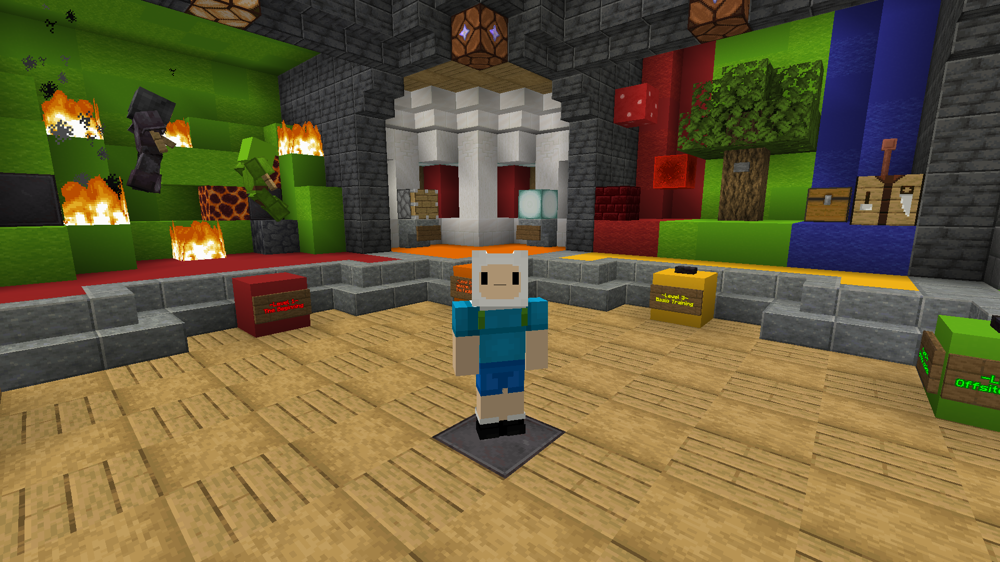

About Sean "DasSkippy" Frederico
I am a male American Computer Game Design Student studying at University of California Santa Cruz

I was born and raised in Encinitas California in November 2002. I have always loved video games since I was a child. I have created several projects on Minecraft and have also built experience working on Unity. I am very familiar with C and C# coding. Creating games is my passion and I'd love to coninue to build a career out of it.
Having the opportunity to code maps within Minecraft and upload them online to watch thousands of players enjoy and review them, has been such a wonderful experience. It has helped instill that game design is what I want to do. I creating games, and I would love to persue it in any form I can.